Common Rule Examples
Calculations largely exist to enhance and refine data to provide the clarity required to make better business decisions. This chapter will discuss real-world use cases for Calculations that you are likely to encounter in a typical OneStream implementation. No two situations are the same, so it is highly unlikely any of these Calculations can be used in the exact way presented. They are simply meant to provide some context around the concepts discussed in the previous chapters.
As we tackle each example, I will explain the requirements of the Calculation and give background to the data and metadata requirements. Further, I will break down the code and explain the functions used… and why.
Common Rule Examples
Balance Sheet and Flow Calculations
If you have Balance Sheet data anywhere in your application, you will also need Calculations to provide supporting movement detail. Account balances are loaded from a source system, and details of the Account movements over time are calculated. These Calculations are stored within the Flow Dimension, and work in conjunction with the Account Dimension to provide insight into Balance Sheet Account movements from period to period.
Common Rule Examples › Balance Sheet and Flow Calculations
Balance Sheet Calculations
While most Balance Sheet Accounts in an Actual Scenario are imported from a source system, there are a handful of Accounts that are almost always calculated. These Calculations are typically stored in Member Formulas – as they run for a specific Account – and should run in the DUCS so that they are cleared and recalculated to reflect any changes in data they are dependent on. This is primarily due to the cascading nature of the Calculations. If imported Balance Sheet data changes, then all Balance Sheet and Flow formulas will need to be cleared and recalculated.
Common Rule Examples › Balance Sheet and Flow Calculations › Balance Sheet Calculations
Current Year Net Income
The Current Year Net Income (CurYearNetIncome) Account pulls the YTD Net Income from the Income Statement into the equity section of the Balance Sheet. In most cases, this is accomplished using a simple api.Data.Calculate function.
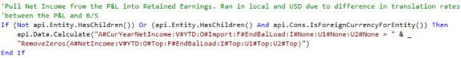
| Note: Throughout this chapter (and the book more generally), many of the code snippets for rule examples are presented line by line with detailed explanations. Screenshots of the code – as presented in the OneStream Business Rule Editor – are used instead of showing the code as plain text and we know that this can sometimes be difficult to read in the print edition of the book. A full application with all referenced code examples (and more) is available to download at: www.OneStreamPress.com/FRC |
Common Rule Examples › Balance Sheet and Flow Calculations › Balance Sheet Calculations › Current Year Net Income
Reduce Data Unit Scope
The preceding If statement is used to reduce Data Unit scope. This Calculation runs specifically on Base Entities but does not filter down to Local only as it should calculate on the translated amount as well. This is because the Income Statement translates at a different rate, so that needs to be captured. The Calculation also runs for foreign currency Parent Entities with Auto-Translation currencies, if used.
Common Rule Examples › Balance Sheet and Flow Calculations › Balance Sheet Calculations › Current Year Net Income
Collapsing Detail
Origin, Flow, Intercompany, UD1, and UD2 Dimensions are included in the formula Member scripts so the detail for those Dimensions is collapsed. This is because the Income Statement data contains more dimensional detail than Balance Sheet Accounts so that detail does not need to be copied.
Common Rule Examples › Balance Sheet and Flow Calculations › Balance Sheet Calculations › Current Year Net Income
Key Account Properties
Common Rule Examples › Balance Sheet and Flow Calculations › Balance Sheet Calculations › Current Year Net Income › Key Account Properties
Formula Pass
Since this Calculation will run as part of the DUCS, it will need to be assigned a Formula Pass. FormulaPass2 will be used in case there are any calculated Accounts within the Income Statement which would use FormulaPass1, so that they run prior to this Calculation. If any additional Formula Passes are needed within the Income Statement, a later pass can be used.
Common Rule Examples › Balance Sheet and Flow Calculations › Balance Sheet Calculations › Current Year Net Income › Key Account Properties
Is Consolidated
The default setting for this property is Conditional (True if no Formula Type (default)) which means that if a Formula Pass is assigned, the Account will not Consolidate. The Is Consolidated property should be changed to True to ensure the calculated results consolidate.
Common Rule Examples › Balance Sheet and Flow Calculations › Balance Sheet Calculations › Current Year Net Income › Key Account Properties
Allow Input
Since this Account will only hold calculated data, the Allow Input property should be changed to
False.
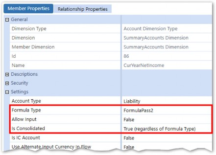
Figure 8.1
Common Rule Examples › Balance Sheet and Flow Calculations › Balance Sheet Calculations › Current Year Net Income
Results
After execution of the Calculation, the Current Year Net Income Account within the Balance Sheet matches the YTD Net Income Account within the Income Statement.
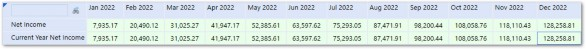
Figure 8.2
Common Rule Examples › Balance Sheet and Flow Calculations › Balance Sheet Calculations
Retained Earnings Beginning Balance
The ending retained earnings balance from the prior year will need to be carried forward via a Calculation and stored in a dedicated Account (REBegBal) within the Equity section of the Balance Sheet.
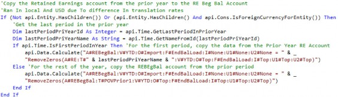
Common Rule Examples › Balance Sheet and Flow Calculations › Balance Sheet Calculations › Retained Earnings Beginning Balance
Reduce Data Unit Scope
The preceding If statement is used to reduce Data Unit scope. This Calculation runs specifically on Base Entities but does not filter down to Local only as it should copy the already translated amount from the Prior Year and not re-translate at the current rate.
Common Rule Examples › Balance Sheet and Flow Calculations › Balance Sheet Calculations › Retained Earnings Beginning Balance
Only Pull from the Prior Year Once
The api.Time.IsFirstPeriodInYear function is used so that the prior year is only referenced once. An api.Data.Calculate will copy forward the Ending Balance from the Retained Earnings Parent Account (RE).
For the rest of the periods, data is simply brought forward from the prior period REBegBal Account, which was calculated in the first ADC function. This will increase performance as retrieving data from prior years takes more processing time since a different data table needs to be referenced.
Common Rule Examples › Balance Sheet and Flow Calculations › Balance Sheet Calculations › Retained Earnings Beginning Balance
Collapsing Detail
Details for Origin, Flow, Intercompany, UD1, and UD2 Dimensions are not needed for analytical purposes so those Dimensions are collapsed in the Formula Member scripts.
Common Rule Examples › Balance Sheet and Flow Calculations › Balance Sheet Calculations › Retained Earnings Beginning Balance
Key Account Properties
Common Rule Examples › Balance Sheet and Flow Calculations › Balance Sheet Calculations › Retained Earnings Beginning Balance › Key Account Properties
Formula Pass
Since the Calculation only references data from prior periods, FormulaPass1 can be used since there are no dependencies. The Is Consolidated property is set to True to ensure the calculated data consolidates.
Common Rule Examples › Balance Sheet and Flow Calculations › Balance Sheet Calculations › Retained Earnings Beginning Balance › Key Account Properties
Is Consolidated
The default setting for this property is Conditional (True if no Formula Type (default)) which means that if a Formula Pass is assigned, the Account will not Consolidate. The Is Consolidated property should be changed to True to ensure the calculated results consolidate.
Common Rule Examples › Balance Sheet and Flow Calculations › Balance Sheet Calculations › Retained Earnings Beginning Balance › Key Account Properties
Allow Input
Since this Account will only hold calculated data, the Allow Input property should be changed to
False. Data for this Account from the source system (if available) will be bypassed (ignored).
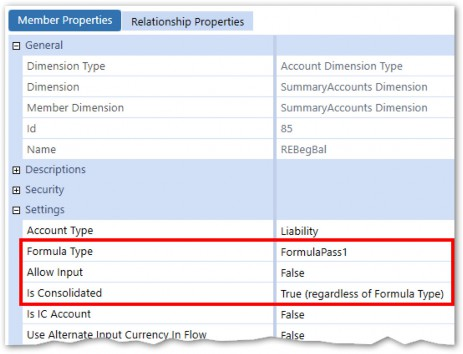
Figure 8.3
Common Rule Examples › Balance Sheet and Flow Calculations
Flow Calculations
As stated above, one of the primary functions of the Flow Dimension is to track the details of Balance Sheet Account movements over time. The Flow Dimension tells the story of what happened to an Account balance from period to period and is used to support reporting requirements such as currency impact analysis and Cash Flow.
While there is not one Flow Dimension configuration to fit every situation, we will go through an example of one that is commonly used in practice, and which can be modified to fit customer-specific requirements. The Flow Dimension setup we will use assumes that Ending Balances are loaded to Balance Sheet Accounts from the source system. In some less-common situations, monthly Balance Sheet activity or movements can be loaded. In this case, the Flow Members would be similar, but the Calculations required would be different.
Common Rule Examples › Balance Sheet and Flow Calculations › Flow Calculations
Dimension Member Setup
The Flow Dimension set up will have four main components:
Beginning Balance
Activity
FX
Ending Balance
These groups will contain a mix of calculated and non-calculated Members and will exist as siblings within the hierarchy.
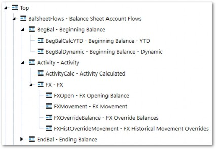
Figure 8.4
The Aggregation Weight property in Relationship Properties will be set to 0 for Beginning Balance and Activity, so that only the loaded Ending Balance aggregates to the Top Member.
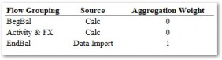
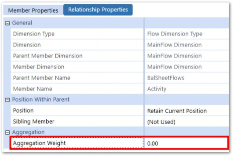
Figure 8.5
Common Rule Examples › Balance Sheet and Flow Calculations › Flow Calculations
Calculations
Common Rule Examples › Balance Sheet and Flow Calculations › Flow Calculations › Calculations
Beginning Balance
The Beginning Balance section is made up of two Members.
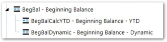
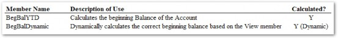
Figure 8.6
Common Rule Examples › Balance Sheet and Flow Calculations › Flow Calculations › Calculations › Beginning Balance
BegBalCalcYTD
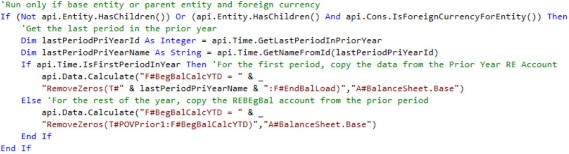
The rule starts with an If statement to reduce Data Unit scope to only Base Entities or foreign currency Parent Entities. For this Calculation, we do not want to let the foreign currency Entities translate at the current exchange rates since the beginning balance is translated at the prior year’s rate, so the Calculation is not restricted to run only at Local Currency. The Calculation will also run at all Base Entities as well as foreign currency Parent Entities.
After declaring some time-based variables, an If statement will check if the current period being processed is the first period in the year and, if so, pull the ending balance from the prior year. For all other periods, the prior period’s balance gets pulled into the current period. We perform this check so that we reduce the number of times the prior year’s data is referenced – due to it being more computationally expensive. Also, note the use of a filter in the ADC function to restrict the Calculation to Accounts that are only within the Balance Sheet.
Common Rule Examples › Balance Sheet and Flow Calculations › Flow Calculations › Calculations › Beginning Balance
BegBalDynamic
As the name suggests, the BegBalCalcYTD Flow Member is meant to show Year-To-Date beginning balances. If BegBalCalcYTD is referenced in Reports with View Members other than YTD, the YTD balance will be displayed regardless of the view frequency selected.
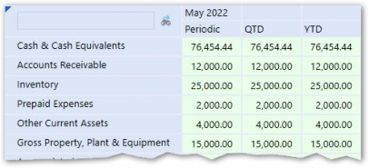
Figure 8.7
The above Report shows the BegBalCalcYTD Member for May (period 5) across MTD, QTD, and YTD frequencies. Assuming the balance has changed over the year (it has in this case), each of these values should be different. To solve this, a dynamically-calculated Member is created, which displays the correct balance – based on the View Member in the POV.
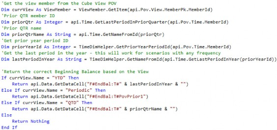
The Formula Type and Account Type properties are set to DynamicCalc
Referencing the dynamically calculated Member now correctly displays the beginning balance, based on the View Member in the column.
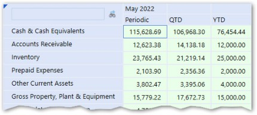
Figure 8.8
Common Rule Examples › Balance Sheet and Flow Calculations › Flow Calculations › Calculations
Activity
The ActivityCalc Member is meant to show the change in the Account from the beginning balance.
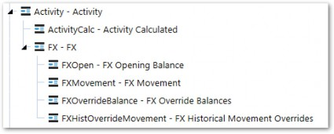
Figure 8.9
Common Rule Examples › Balance Sheet and Flow Calculations › Flow Calculations › Calculations › Activity
ActivityCalc
The ActivityCalc Member is meant to show the YTD change in the Account from the beginning balance.
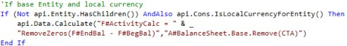
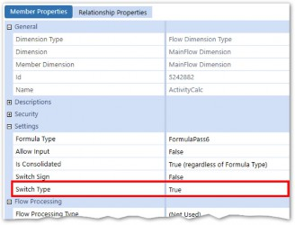
Note: The Figure 8.10 |
An api.Data.Calculate function is used to subtract the BegBal from the EndBal for Balance Sheet Accounts only (excluding the CTA Account, which is covered later). Ensure that the Formula Pass used is later than the Formula Pass on EndBal or BegBal which are referenced in the formula.
Common Rule Examples › Balance Sheet and Flow Calculations › Flow Calculations › Calculations
FX
The FX section of the Flow Dimension is meant to capture the effects of foreign exchange rates on Account balances over time. Since the Ending Balance of an Account is comprised of the sum of Beginning Balance and Activity, different exchange rates may apply to each. Because of this, the FX effect is broken out into multiple Members.
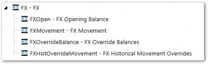
Figure 8.11
FX exposure is important for a company to understand to analyze pure Account movements.
Changes in balances on the surface may appear as a positive or negative change in cash, but analyzing the FX proves what the true effect on cash inflows or outflows was. Why is this important? Take Account Receivable, for example. If the balance in Accounts Receivable went down from period to period, it may appear as though the company is collecting cash. If you are able to break down the A/R Account into its pure activity versus FX exposure, you can analyze just how much, if any, the company collected.
With the OneStream Flow Dimension, the Calculation and reporting of FX and CTA are simplified. FX Members are created and attached to each Balance Sheet Account, with rules (described later) to calculate the components of FX. This allows a User to be able to report and analyze every Account by its FX exposure.
Common Rule Examples › Balance Sheet and Flow Calculations › Flow Calculations › Calculations › FX
Formulas
All the formulas for these Members will have a preceding If statement to only calculate at foreign currency Entities.
Common Rule Examples › Balance Sheet and Flow Calculations › Flow Calculations › Calculations › FX
FXOpen
The FXOpen Member calculates the effect of exchange rate changes on the opening balance. Put another way, the Calculation will determine the difference between the beginning balance which was translated at last year’s rate and the beginning balance translated at the current period’s rates.
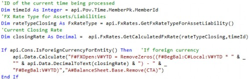
The above Calculation retrieves the current Closing Rate using the api.FxRates.GetCalculatedFxRates function. The rate is then multiplied by the Local Currency balance and subtracted from the BegBal Flow Member. Remember that the
BegBalCalcYTD Flow Member pulls the already translated balance from the prior year since the Calculation scope was not limited to Local currency.
Even though the full balance is translated at the current rate, the FXOpen Member will show the effect of rate changes on the beginning balance.
Common Rule Examples › Balance Sheet and Flow Calculations › Flow Calculations › Calculations › FX
FXMovement
The FXMovement Member calculates the FX effect on the Account activity. The formula below captures three components of the FX Movement:
FX on the current movement: calculates the FX on the current movement (the difference between the current closing rates and current average rates).
FX on the prior movement: calculates the FX on the prior movement (the difference between the current closing rates and prior average rates).
FX on the override movement: calculates the FX on movements which have been overridden (difference between average rate and the rate the movement was overridden with).
An If Statement makes a distinction between the first period of the year and all others, since periods other than the first will have no prior movements to consider.
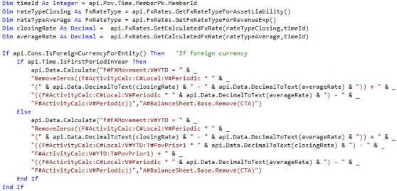
Common Rule Examples › Balance Sheet and Flow Calculations › Flow Calculations › Calculations › FX
FXOverrideBalance and FXHistoricalOverrideMovement
If any Members are translated at rates other than the current rate – for example, historical transactional rate or the Retained Earnings Beginning Balance – the FX effect will be captured in these Members.
Common Rule Examples › Balance Sheet and Flow Calculations › Flow Calculations
CTA – Cumulative Translation Adjustment
CTA, or Cumulative Translation Adjustment, is the Calculation of the cumulative Balance Sheet exposure as a result of the difference in FX rates for each reporting period and is reported in OCI (other comprehensive income). At each reporting period date, Balance Sheet Accounts are either translated at the closing rate, historical exchange rate, or weighted average rate, which results in changes attributable only to the differences in these rates. For example, a functional currency balance could not change from period to period, but the reporting currency balance could, due to the exchange rate used.
CTA reported on the Balance Sheet is the summation of the FX (explained in detail in the prior section) for each individual Balance Sheet Account.
Common Rule Examples › Balance Sheet and Flow Calculations › Flow Calculations › CTA – Cumulative Translation Adjustment
Formula
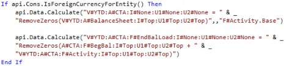
Common Rule Examples › Balance Sheet and Flow Calculations › Flow Calculations › CTA – Cumulative Translation Adjustment
Calculation
The Calculation of CTA uses two ADC functions. The first calculates the CTA for each Base Flow Member of Activity (via the filter) by summing the Balance Sheet.
The second ADC function calculates the CTA for the EndBalLoad Flow Member by adding the CTA from the BegBal and Activity Flow Members.
Common Rule Examples › Balance Sheet and Flow Calculations › Flow Calculations › CTA – Cumulative Translation Adjustment
CTA Proof
As part of a company’s audit, they are often asked to provide proof of the Calculation of the Translation adjustment in CTA. This is no longer a disconnected, separate process to calculate a proof and make sure it reconciles to the CTA balance. The FX by Account can be totaled and moved to the CTA Account so that the Calculation of CTA is the proof. If the Calculation of FX by Account is not correct, the Balance Sheet won’t balance in the translated currency.
The below CTA Proof Report can be set up to show the balance sheet balancing across all Members of the Flow Dimension, as shown in the last row. If any out-of-balance exists, it can be traced to the specific Flow component(s) and Account(s), as shown in the last column.
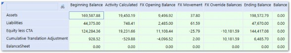
Figure 8.12
| Note: Much of the knowledge in the Balance Sheet and Flow Calculations section, as well as the next section, was borrowed heavily from Chapter 4 of the OneStream Foundation Handbook, written by Eric Osmanski. Please refer to that book and chapter for additional detail. |
Common Rule Examples
Consolidation Calculations
Consolidation Calculations are Calculations that are meant to follow GAAP principles for how to record the necessary accounting entries related to internal investments. The Entities that have been invested in by the reporting corporation are sometimes owned less than 100% and thus require entries to reflect the partial ownership. This section will explain Calculations for two common ownership situations. Note that these Calculations are specific to GAAP accounting rules and different accounting rules will exist in other countries. These Calculations also require a deep knowledge of accounting principles in addition to technical Calculation knowledge.
Common Rule Examples › Consolidation Calculations
Equity Pickup (EPU)
Common Rule Examples › Consolidation Calculations › Equity Pickup (EPU)
Background and Business Case
The proper Consolidation of Entities is based on accounting guidelines. Under U.S. GAAP, there are two Consolidation models – the Variable Interest Entity Model (VIE) and the Voting Interest Entity Model (VOE).
The VIE model is applied first and was designed to accommodate situations in which control is demonstrated in ways other than through voting interests. Under the VIE model, an Entity is consolidated when the Parent Entity has significant power over the activities of the VIE and has significant economic exposure to the gains or losses of the VIE. Consolidation under the VIE model also has different measurement, presentation, and disclosure requirements that need to be considered. If the conditions to consolidate under the VIE model do not apply, or if it is an exception to the VIE model, then the voting interest model would then be applied.
Under the voting interest model, full Consolidation is used when a Parent Entity has a controlling financial interest, and the percentage ownership of the subsidiary is greater than or equal to 50%. Under this Method, the financial statements of the subsidiary are consolidated into the Parent.
Whether a Parent Entity is required to present consolidated financial statements under IFRS is based on its control of the investee. Control is defined as when a Parent Entity has power over the investee, has rights to returns due to its involvement, and can influence its returns from the investee based on its power. When all three control elements are present, the financial statements of the subsidiary are consolidated into the Parent.
The Parent company records the amount owned as an investment in the subsidiary, and the subsidiary records the same amount in equity. All Intracompany transactions – including the investment and equity – are eliminated during Consolidation so that the values are not overstated. If ownership is less than 100%, the Parent company will record in equity, and on the Income Statement, the noncontrolling interest in the subsidiary – which is equal to the subsidiary’s equity at the percentage not owned by the Parent.
Under the voting interest model, the Equity Method is typically used when the percentage ownership of the investee is between 20 and 50%, and the investor has significant influence. The balances of the investee/subsidiary are not consolidated under the Equity Method; instead, the investor records an investment on the balance sheet equal to its ownership share of the investee’s equity balance. For each period, the investor increases (or decreases) its investment by its ownership share of the investee’s net income (loss), known as equity pickup. The ownership share of net income (loss) is also recorded on the investor’s Income Statement separately.
Equity Pickup (EPU) is the process of revaluing the investments of an investor to reflect the current value of its proportionate share of the investee’s equity balance. OneStream allows for the automation of these entries – including layered ownership models – by entering ownership percentages, defining the Calculation sequence, and developing a rule to generate the entries. These rules will record the impact of the increase (assuming net income rises for the period on the part of the investee) or decrease (under circumstances where the investee incurs a net loss) in the investor’s ownership share of the investee.
There are multiple methods at your disposal to record the equity pickup. The following discussion will cover the most common method.
Common Rule Examples › Consolidation Calculations › Equity Pickup (EPU)
Example
For our example, the Stooges have decided to take their large pile of cash accrued from killing insects and make some investments in other companies. They set up an Entity named Cheatum Investments and make their first investment in Gypsum Good Antiques, taking a 30% stake. Larry, who has the most accounting skills of the three, now has the responsibility of devising a Calculation to correctly record the investment.
Common Rule Examples › Consolidation Calculations › Equity Pickup (EPU) › Example
Cube Setup
First, Larry makes a few changes within the Cube settings so that the Consolidation Rules work correctly.
The Calculation settings are modified so that Calculate Share Cons Member If No Data and Calculate Elimination Cons If No Data are set to True. This forces those Members to calculate which is necessary to write to the elimination Member of the Consolidation Member.
A Business Rule is also created (explained later) named ConsolRules and is assigned to the Cube so that it runs during the DUCS.
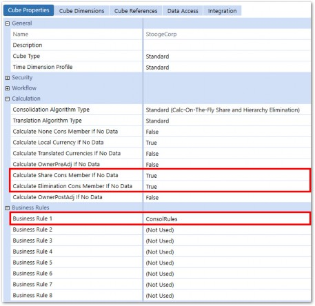
Figure 8.13
Common Rule Examples › Consolidation Calculations › Equity Pickup (EPU) › Example
Metadata Setup
Common Rule Examples › Consolidation Calculations › Equity Pickup (EPU) › Example › Metadata Setup
Entities
Larry creates the new Entities, Cheatum Investments and Gypsum Good Antiques, within a SubGroup:
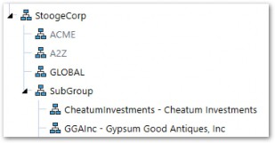
Figure 8.14
GGAInc is set up as a sibling of its owner, CheatumInvestments. Larry must also configure various properties within the Entities so that the Calculation works correctly.
The 30% ownership of Gypsum (the subsidiary/investee), by Cheatum (the investor), needs to be entered in the Relationship Properties tab of the Entity Dimension.
The attributes within the Relationship Properties tab reflect this percentage ownership. The tab can be found within the Entity Dimensions settings, as follows:
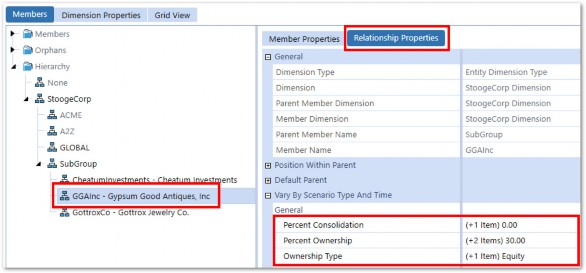
Figure 8.15
The Percent Ownership property is then set within the Varying Member Property panel, as illustrated below:
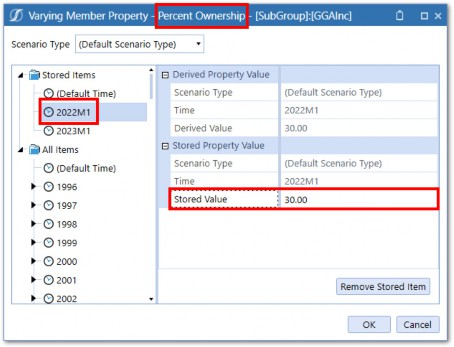
Figure 8.16
Note that the percentages can vary by Scenario Type and Time period. In the example above, the percentage ownership of 30 will be in effect for all periods, starting with 2022M1, until a different percentage is entered in a future period. In this example, the percentage is increased to 40, starting in 2023M1:
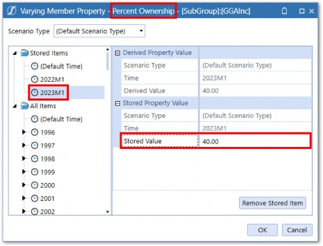
Figure 8.17
In addition to the Percent Ownership of the subsidiary/investee, the Percent Consolidation property also needs to be entered in the relationship properties.
Like Percent Ownership, the Percent Consolidation can also vary by Scenario Type and Time period. The Percent Consolidation for Entities that are non-consolidating but for which an equity pickup is being recorded – as is the case for GGAInc (Gypsum Good Antiques) – will be zero. Given that the default Percent Consolidation within OneStream is 100, the value of zero (0) needs to be entered for GGAInc, as shown below:
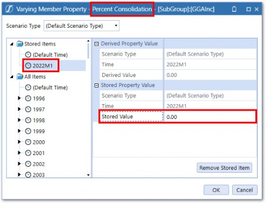
Figure 8.18
Larry also configures the Ownership Type property, which will be utilized by the Calculation which creates the EPU entry. The recommended value for this Type of ownership (e.g., GGAInc to its Parent SubGroup) is Equity, as seen below:
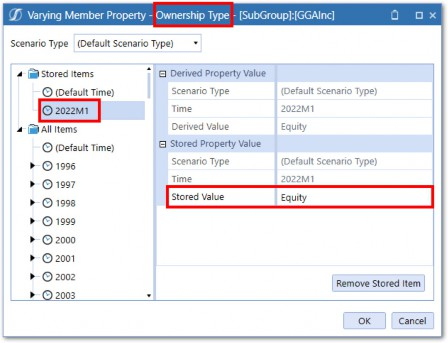
Figure 8.19
Further, Larry also changes the Ownership Type of CheatumInvestments to Holding which identifies it as the investor.
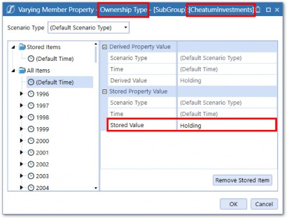
Figure 8.20
| Note: The Ownership Type property is strictly a label that can be referenced in Business Rules and does not change the Consolidation behavior by itself. |
Larry also sets the Sibling Consolidation Pass setting for CheatumInvestments to a value greater than the minimum value for each of the sibling Entities for which the holding company is picking up earnings via the EPU Calculation. This is due to the multi-threading concept introduced in Chapter 2 which means that sibling Entities process at the same time.
As shown in the diagram below, CheatumInvestments has been assigned Pass 4.
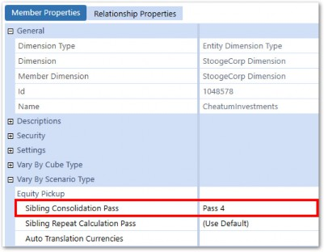
Figure 8.21
This indicates that Cheatum will execute after all its sibling Entities, whose Sibling Consolidation Pass setting is Pass 1 (or lower than Pass 4), ensuring that the data required for the EPU entry, including a potential currency Translation, processes in the correct order.
| Note: The default setting for the Sibling Consolidation Pass is Pass 1. |
Common Rule Examples › Consolidation Calculations › Equity Pickup (EPU) › Example › Metadata Setup
Accounts
The Investment in Subsidiary Account(s) needs to be identified with a text field attribute that provides an additional filter used to determine how the entry should be recorded. An example of this setup is illustrated below. Account InvestmentInSubs (IC Investments in Subsidiary) has been populated with a Text 1 attribute of Investment.
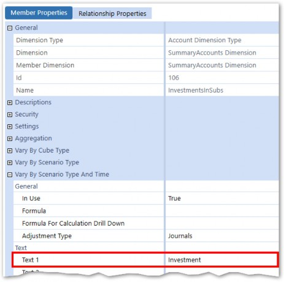
Figure 8.22
That value will then initiate the recording of the EPU entry within the Consolidation Business Rules. As discussed earlier, it is imperative that this Account is enabled for IC detail:
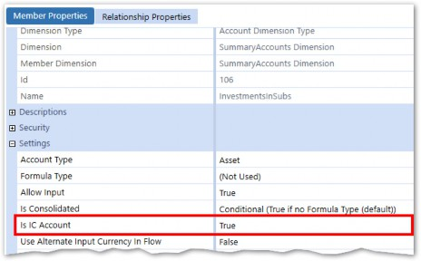
Figure 8.23
This enables the investee to be identified within the data being processed and the proper Net Income amount can be obtained from that legal Entity.
Common Rule Examples › Consolidation Calculations › Equity Pickup (EPU) › Example › Metadata Setup
Data Type Dimension
Lastly, Larry decides he wants to track the source of the various Consolidation Rules (and to provide a detailed audit trail Report to his auditors) so he creates a DataType Dimension in UD5. The Members within this Dimension will relate to the entries made by the Consolidation Calculations.
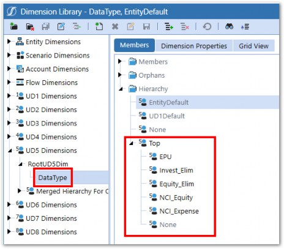
Figure 8.24
Common Rule Examples › Consolidation Calculations › Equity Pickup (EPU) › Example
Data Setup
The data that drives a Calculation is in both the Cheatum Investments holding company (the Entity that has recorded the investment in its subsidiary) and Gypsum Good Antiques (the subsidiary).
Larry first records the investment in the InvestmentInSubs Account for Cheatum, specifying Gypsum as the Intercompany partner.
Gypsum will then submit their financials each month and their results will appear in the Net Income Account.
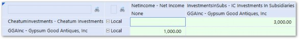
Figure 8.25
Common Rule Examples › Consolidation Calculations › Equity Pickup (EPU) › Example
Rule Abstract
This rule is recording the entry to adjust the Investment in Subsidiary and Equity in Earnings from Subsidiary Investments (Profit and Loss Account) to reflect Cheatum’s proportionate share of Gypsum’s earnings for each period.
Common Rule Examples › Consolidation Calculations › Equity Pickup (EPU) › Example
The Code Breakdown - Section 1
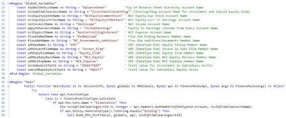
Common Rule Examples › Consolidation Calculations › Equity Pickup (EPU) › Example › The Code Breakdown - Section 1
Abstract
The code in this section initializes variables and then determines whether we are processing the appropriate intersection of data to book the EPU entry. A description of the processing taking place within the major blocks is as follows:
Common Rule Examples › Consolidation Calculations › Equity Pickup (EPU) › Example › The Code Breakdown - Section 1
Lines 23-38
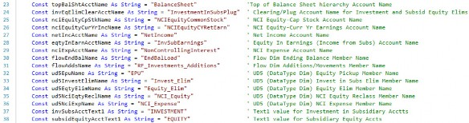
Initialize variables, which identify various Member Names that are referenced in other subroutines within the Business Rule.
Common Rule Examples › Consolidation Calculations › Equity Pickup (EPU) › Example › The Code Breakdown - Section 1
Lines 45-49
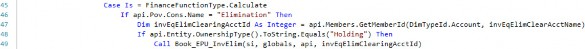
Determine whether we are processing the Elimination Member of the Consolidation Dimension and, if so, determine if the Ownership Type attribute of the current (POV) Entity Relationship has been set to Holding for the current period being processed. If those conditions have been met, the subroutine Book_EPU_InvElim is called, where the actual EPU entry will be created.
Common Rule Examples › Consolidation Calculations › Equity Pickup (EPU) › Example
Section 2
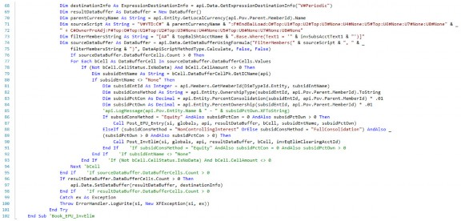
Common Rule Examples › Consolidation Calculations › Equity Pickup (EPU) › Example › Section 2
Abstract
This section obtains the investment in subsidiary data that drives the entry, along with the appropriate ownership percentages. It then calls a subroutine that contains the rules that create the balanced entry. A description of the processing taking place within the major blocks is as follows:
Common Rule Examples › Consolidation Calculations › Equity Pickup (EPU) › Example › Section 2
Lines 68-69
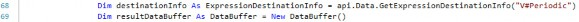
Declare a Result Data Buffer and Destination Info object which will be used throughout the rule.
Common Rule Examples › Consolidation Calculations › Equity Pickup (EPU) › Example › Section 2
Lines 70-75
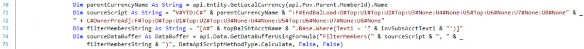
Define the filter for the data required and declare the Data Buffer that is then looped through in the rows below.
Common Rule Examples › Consolidation Calculations › Equity Pickup (EPU) › Example › Section 2
Lines 77-93
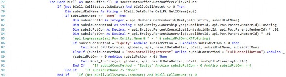
Loop through the Data Buffer that includes the Investment in Subsidiary data and process each record. Determine if the subsidiary (IC Member) has been assigned a Consolidation Method of Equity for the Parent being consolidated if the percent Consolidation is zero and if the percent ownership is greater than zero. If all of these conditions have been met, call the subroutine to record the balanced entry for the EPU (note that lines 88–90 relate to the elimination of Investment in Subsidiary when there is majority ownership, discussed separately in the Noncontrolling Interest section).
Common Rule Examples › Consolidation Calculations › Equity Pickup (EPU) › Example › Section 2
Lines 95-98
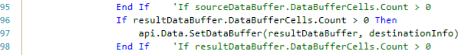
Write the data (the EPU entry line items) included in the Results Buffer to the database.
Common Rule Examples › Consolidation Calculations › Equity Pickup (EPU) › Example
Section 3
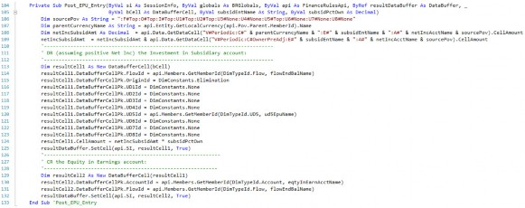
Common Rule Examples › Consolidation Calculations › Equity Pickup (EPU) › Example › Section 3
Abstract
This section (encapsulated within the Post_EPU_Entry subroutine) computes and records the line items within the EPU entry. It emulates posting a manual Journal entry for EPU. The first portion of the code obtains the net income from the subsidiary for which we are recognizing our portion of income in the consolidating earnings and creates the debit and credit line-item entries. A description of the processing taking place within the major blocks is as follows:
Common Rule Examples › Consolidation Calculations › Equity Pickup (EPU) › Example › Section 3
Lines 106-109
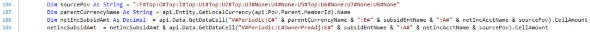
Obtain the net income from the subsidiary that we have an investment in and for which we are recording our proportionate share of their earnings for this period.
Common Rule Examples › Consolidation Calculations › Equity Pickup (EPU) › Example › Section 3
Lines 113-125
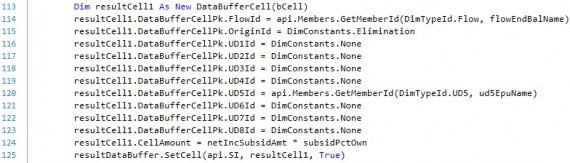
Record the impact to the Investment in Subsidiary Account. If the subsidiary’s earnings are positive for the period, this will represent a debit to the Investment Account. The net income is multiplied by the holding company’s percentage ownership in the subsidiary.
Common Rule Examples › Consolidation Calculations › Equity Pickup (EPU) › Example › Section 3
Lines 129-132
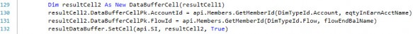
Record the impact to the Equity in Earnings Account within the Income Statement. If the subsidiary’s earnings are positive for the period, this will represent a credit to the Earnings Account. The net income is multiplied by the holding company’s percentage ownership in the subsidiary.
Common Rule Examples › Consolidation Calculations › Equity Pickup (EPU) › Example
Results
Following a Consolidation of the SubGroup, the EPU Calculation books the entry to both the InvestInSubs and InvSubsEarnings Accounts, accounting for the 30% ownership percentage of the $300 Net Income.
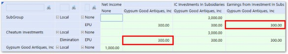
Figure 8.26
Common Rule Examples › Consolidation Calculations
Noncontrolling Interest (NCI)
Generally speaking, under US GAAP accounting, companies with >50 percent (majority) ownership of another company, but below 100 percent, are required to consolidate 100 percent of the subsidiary’s financials into their own financial statements. However, as stated above, a reporting Entity must consolidate any legal Entity in which it has a controlling financial interest.
The appropriate accounting treatment applied for investments with majority ownership is the
Consolidation Method.
To reflect the fact that the acquirer owns less than 100 percent of the consolidated assets and liabilities, a new equity line item titled Noncontrolling Interests is created and will reflect the amount of equity possessed by the minority shareholders external to the legal Entity being reported.
As for the income statement, the subsidiary’s income statement will also be consolidated into the combined income statement. As such, the consolidated net income reflects the share of net income that belongs to the Parent common shareholders, while also displaying the consolidated net income that does not belong to the Parent. A separate line item that represents the portion of net income that belongs to the minority shareholders will be netted (subtracted, assuming positive income) from the net income (loss) attributable to the shareholders of the reporting Entity. It is typically labeled as “Earnings attributable to noncontrolling interests” or something very similar. The Calculation must be performed on a monthly basis, given that the minority ownership percentage can change throughout time.
Common Rule Examples › Consolidation Calculations › Noncontrolling Interest (NCI)
Example
For the Stooges’ next venture, they purchase a 70% controlling stake in the Gottrox Jewelry Company, again with Cheatum Investments as the holding company.
Common Rule Examples › Consolidation Calculations › Noncontrolling Interest (NCI) › Example
Metadata
Common Rule Examples › Consolidation Calculations › Noncontrolling Interest (NCI) › Example › Metadata
Entities
Larry first creates the new Entity within the SubGroup Parent, again as a sibling of the investor company, Cheatum Investments.
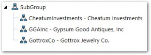
Figure 8.27
CheatumInvestments is the holding company that has recorded an Investment in Subsidiary for GottroxCo which is 70% owned by the SubGroup consolidated structure and thus will be consolidated into the SubGroup Legal Entity accordingly, with the appropriate accounting entries recorded to reflect the ownership interests of the minority stockholders.
Larry enters the Percent Ownership of Gottrox in the Relationship Properties.
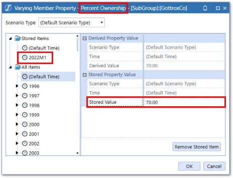
Figure 8.28
As mentioned earlier, the percentages can vary by Scenario Type and Time period. In the example above, the percentage ownership of 70 will be in effect for all periods, starting with 2022M1, until a different percentage is entered in a future Time period.
In addition to the Percent Ownership of Gottrox, Larry also considers the Percent Consolidation. Given that the default Consolidation percentage within OneStream is 100, the amount does not necessarily have to be modified in the relationship settings, but it should be verified. The Percent Consolidation for Gottrox and Cheatum will be set to (absorb the default value of) 100, as shown below:
Figure 8.29
The final setting that is pertinent for the relationship properties is Ownership Type. The Business Rules that create the NCI entry will refer to this setting. The recommended value for this Type of ownership (e.g., GottroxCo to its Parent SubGroup) is Non-Controlling Interest, as seen below.
Figure 8.30
This label may seem contradictory to the ownership structure, as the Parent company indeed possesses a controlling interest in the subsidiary, but in this case, we have chosen this label to reference the fact that we will be automating the entries to record the noncontrolling interest aspect of our ownership in a special section of equity on the Balance Sheet entitled “Noncontrolling interests” and a line item on the Income Statement entitled “Net income attributable to noncontrolling interest.”
The other option is to leave this setting at the default value of Full Consolidation and initiate the rule that records the NCI through examination of the percentage ownership (testing for a value less than 100 percent) in combination with the percentage Consolidation (i.e., 100% for NCI). Both options are valid.
Common Rule Examples › Consolidation Calculations › Noncontrolling Interest (NCI) › Example › Metadata
Accounts
The next step is for Larry to identify the Equity Accounts for which the balance will be eliminated during the Consolidation process. These Accounts need to be identified with a text field attribute which will initiate the elimination of the balance and the reclassification of the minority ownership percentage (calculated as 1 minus the percentage ownership) portion of the balance into the Noncontrolling Interest subsection (within the Equity section) of the balance sheet. An example of this setup is illustrated below. Account Stock (Common Stock) has been populated with a Text 1 attribute of Equity.
Figure 8.31
That value will then initiate the recording of the NCI entry within the Consolidation Business Rules, as explained below.
In addition to the Equity Accounts being eliminated and partially reclassified to the NCI section, Larry identifies other Accounts utilized in the Business Rule that creates the NCI adjustment, as follows:
The NCI Equity Account(s) that is the recipient of the reclassed equity (minority ownership portion). This Account can be stored in a parameter, a text field (for each of the core Equity Accounts that are being eliminated), or in a variable within the Consolidation Rules, amongst other options. Example Accounts appear below:
Figure 8.32
The
InvestmentsInSubsPlugAccount is utilized as a ‘Clearing Account’ in the elimination of the Gottrox (subsidiary) equity (and corresponding investment in subsidiary that exists within Cheatum (holding company)). Like the NCI Equity Account(s), this Account can be stored in a parameter, a text field, or in a variable within the Consolidation Rules, amongst other options. An example Account appears below:Figure 8.33
The NCI Expense Account is utilized to post the adjustment of net income to recognize the portion attributable to the minority stakeholders. Like the above Accounts, this Account can be stored in a parameter, a text field, or in a variable within the Consolidation Rules, amongst other options. An example Account appears below:
Figure 8.34
Common Rule Examples › Consolidation Calculations › Noncontrolling Interest (NCI) › Example
Data Description
The data that drives this Calculation is located in the subsidiary that is owned less than 100% (but most likely greater than 50%). The data will exist in the Stockholders Equity section:
In addition to the Equity Accounts, we also utilize the data in the Net Income (Parent-level) Account within the Income Statement section of the Chart of Accounts:
Figure 8.35
Common Rule Examples › Consolidation Calculations › Noncontrolling Interest (NCI)
Rule Abstract
This rule records the entry to eliminate subsidiary equity and reclassify/identify the minority stockholder’s portion of equity on the Balance Sheet and earnings (loss) within the Income Statement for each period.
Common Rule Examples › Consolidation Calculations › Noncontrolling Interest (NCI)
Code Breakdown
Common Rule Examples › Consolidation Calculations › Noncontrolling Interest (NCI) › Code Breakdown
Section 1
Common Rule Examples › Consolidation Calculations › Noncontrolling Interest (NCI) › Code Breakdown › Section 1
Abstract
The code in this section initializes variables and then determines whether we are processing the appropriate intersection of data to book the EPU entry. A description of the processing taking place within the major blocks is as follows:
Common Rule Examples › Consolidation Calculations › Noncontrolling Interest (NCI) › Code Breakdown › Section 1
Lines 23-39
Initialize variables that are referenced in other subroutines within the Business Rule.
Common Rule Examples › Consolidation Calculations › Noncontrolling Interest (NCI) › Code Breakdown › Section 1
Lines 46-51
These lines determine whether we are processing the Elimination Member of the Consolidation Dimension and, if so, will determine if the Ownership Type attribute of the current (POV) Entity Relationship has been set to NonControllingInterest for the current period being processed. If those conditions have been met, the subroutine Book_NCI is called, where the actual NCI entry will be created. Note that rows 47-48 pertain to the Equity Pickup entry, discussed previously.
Common Rule Examples › Consolidation Calculations › Noncontrolling Interest (NCI) › Code Breakdown
Section 2
Common Rule Examples › Consolidation Calculations › Noncontrolling Interest (NCI) › Code Breakdown › Section 2
Abstract
This section obtains the investment in subsidiary data that drives the entry, along with the appropriate ownership percentages and then calls a subroutine that contains the rules that create the balanced entry. A description of the processing taking place within the major blocks is as follows:
Common Rule Examples › Consolidation Calculations › Noncontrolling Interest (NCI) › Code Breakdown › Section 2
Lines 172-174
Obtain the Entity relationship percentages (Consolidation, ownership) and initialize variables.
Common Rule Examples › Consolidation Calculations › Noncontrolling Interest (NCI) › Code Breakdown › Section 2
Lines 175-183
Specify criteria pertinent to defining the Source and Result Data Buffers. A source script is defined and passed into the GetDataBuffer function. An empty Result Data Buffer and DestinationInfo objects are declared and will be used later.
Common Rule Examples › Consolidation Calculations › Noncontrolling Interest (NCI) › Code Breakdown › Section 2
Lines 184-194
Loop through the Data Buffer that includes the subsidiary equity data and process each record. Call the subroutine (Post_NCI_EqElim) that will post the elimination of the subsidiary equity (row 189) and the subroutine (Post_NCI_ReclEqty) to post the reclassification of equity into the NCI Equity section of the balance sheet (row 191).
Common Rule Examples › Consolidation Calculations › Noncontrolling Interest (NCI) › Code Breakdown › Section 2
Lines 196-198
Write the data for the equity elimination and NCI Equity reclass entry line items included in the results buffer to the database.
Common Rule Examples › Consolidation Calculations › Noncontrolling Interest (NCI) › Code Breakdown › Section 2
Lines 199-201
Check if the percent ownership is greater than 100 and if so, call the subroutine (Post_NCI_Exp) that will post the entry for NCI Expense on the Income Statement, and the offset to the Retained Earnings section of the Balance Sheet.
Common Rule Examples › Consolidation Calculations › Noncontrolling Interest (NCI) › Code Breakdown
Section 3
Common Rule Examples › Consolidation Calculations › Noncontrolling Interest (NCI) › Code Breakdown › Section 3
Abstract
This section will post the elimination of the equity for the subsidiary that is owned by the holding company being consolidated.
Common Rule Examples › Consolidation Calculations › Noncontrolling Interest (NCI) › Code Breakdown › Section 3
Lines 214-227
Post the elimination of the subsidiary equity balance. This entry will be a debit, assuming a positive balance in the source Equity Account.
Common Rule Examples › Consolidation Calculations › Noncontrolling Interest (NCI) › Code Breakdown › Section 3
Lines 231-233
Post the offset to the investment in the subs/subsidiary Equity Clearing Account. This entry will be a credit, assuming a positive balance in the source Equity Account.
Common Rule Examples › Consolidation Calculations › Noncontrolling Interest (NCI) › Code Breakdown
Section 4
Common Rule Examples › Consolidation Calculations › Noncontrolling Interest (NCI) › Code Breakdown › Section 4
Abstract
This section will post the reclassification of the minority ownership portion of subsidiary equity from the primary equity section to the Noncontrolling Interest equity section.
Common Rule Examples › Consolidation Calculations › Noncontrolling Interest (NCI) › Code Breakdown › Section 4
Lines 246-260
Post the offset (see next row for details) to the investment in the subs/subsidiary Equity Clearing Account. This entry will be a debit, assuming a positive balance in the source Equity Account.
Common Rule Examples › Consolidation Calculations › Noncontrolling Interest (NCI) › Code Breakdown › Section 4
Lines 264-266
Post the minority ownership portion of the equity balance to the Noncontrolling Interest Equity Account. The amount is calculated as the balance within the Equity Account multiplied by the minority ownership percentage. This entry will be a credit, assuming a positive balance in the source Equity Account.
Common Rule Examples › Consolidation Calculations › Noncontrolling Interest (NCI) › Code Breakdown
Section 5
Common Rule Examples › Consolidation Calculations › Noncontrolling Interest (NCI) › Code Breakdown › Section 5
Abstract
This section will post the entry to the NCI Expense Account and the corresponding amount to the NCI Equity Account in order to accurately report the net income attributable to minority ownership shareholders and reclassify the current year income in the standard Retained Earnings section of the Balance Sheet to the NCI Equity section.
Common Rule Examples › Consolidation Calculations › Noncontrolling Interest (NCI) › Code Breakdown › Section 5
Lines 270-273
Obtain the periodic Net Income for the subsidiary.
Common Rule Examples › Consolidation Calculations › Noncontrolling Interest (NCI) › Code Breakdown › Section 5
Lines 274-279
For all periods beyond M1, obtain the prior period YTD NCI Expense amount using an api.Data.GetDataCell function.
Common Rule Examples › Consolidation Calculations › Noncontrolling Interest (NCI) › Code Breakdown › Section 5
Line 280
Calculate the current period NCI expense by multiplying the Net Income by the percent ownership.
Common Rule Examples › Consolidation Calculations › Noncontrolling Interest (NCI) › Code Breakdown › Section 5
Line 284
Post the minority ownership portion of the current period Net Income to the NCI Expense Account. The amount is determined by multiplying the periodic Net Income by the minority ownership percentage. It will be a debit, assuming positive earnings for the period.
Common Rule Examples › Consolidation Calculations › Noncontrolling Interest (NCI) › Code Breakdown › Section 5
Line 288
Adjust the NCI Equity Account (for current year earnings) to include the minority ownership portion of current period Net Income. For the first period in the year, the amount is determined by multiplying the periodic Net Income by the minority ownership percentage. For all other periods, it will include the current period amount (mentioned above) plus the prior period YTD amount. It will be a credit, assuming positive earnings for the period.
Common Rule Examples › Consolidation Calculations › Noncontrolling Interest (NCI) › Code Breakdown
Results
After executing the rule, the portion of Net Income not owned by Cheatum (600) is eliminated and consolidated to the Non-Controlling Expense Account at the SubGroup Entity. The same 600 is also eliminated from the Current Year Retained Earning Account to reflect the reduction in Net Income. The Investment In Subsidiary and Common Stock Account balances are also fully eliminated.
Figure 8.36
Common Rule Examples › Consolidation Calculations
Variations
Variations in requirements and specific situations may require tweaking the method of calculating EPU and NCI presented above. For example, ownership percentage of the subsidiary may need to be calculated based on voting rights, or shares held, which can change from period to period. In this case, ownership percentage can be determined within a separate Calculation and stored in a specific Account. As stated in the beginning of this chapter, these examples are not meant to suit every situation and should be used as a frame of reference for writing complex Consolidation Calculations.
Common Rule Examples
Seeding Rules
Seeding rules refer to rules that copy data from one Scenario to another. These types of rules are very common in almost every application due to OneStream’s unique ability to support data for multiple business processes. For example, Year-To-Go Forecast Scenarios typically require historical Actual data to arrive at a full-year view, or Budgets may use Actual data as a starting point in which a growth rate is applied.
OneStream has several ways to copy data from Scenario to Scenario:
Data Management Copy Steps
Hybrid Source Data Scenarios
Finance Business Rules
Of the above Methods, Finance Business Rules offer the most flexibility. Since this book focuses on Finance Business Rules, I will go through examples that utilize this approach. Other Methods may fit best for a particular situation, however, and should be taken into consideration.
Common Rule Examples › Seeding Rules
What Rule Type to Use?
By their very nature, seeding rules are often one-time exercises that are performed to copy data from a Scenario or Time period which is closed. Because of this, Custom Calculate is the logical choice as the method of executing seeding rules; it allows the rules to run once or on an ad-hoc basis and does not have to be cleared and re-calculated each time the DUCS is executed.
If data from the source Scenario changes frequently, it may make sense to execute the rule in a Scenario Formula that will run as part of the DUCS. It’s important to understand the implications of running this rule in the DUCS as the data will be cleared and recopied each time a Calculation or Consolidation takes place.
The right rule type to use is largely situational but – in most cases – Custom Calculate is the most efficient as it can be executed on demand. In our Forecast seeding examples explained below, Actual data should not change after it is copied. In this case, Custom Calculate makes the most sense.
Common Rule Examples › Seeding Rules › What Rule Type to Use?
IsDurable and ClearCalculatedData
Using Custom Calculate rules would mean that the isDurableData property should be set to True for all Calculations and a preceding ClearCalculatedData script would need to be included as well.
Common Rule Examples › Seeding Rules
Simple Copy Data Example
Let’s start with a very simple example of a seeding rule:
The above script copies all data from the Budget Scenario to the Fcst_M1 Scenario. Note that we are able to use Scenario in the Destination Script. This means that all data from Budget will be copied to Fcst_M1. Integrating logic to only copy certain Entities, Accounts, or Time can make your seeding rules much more dynamic, so you’ll likely need the full arsenal of Business Rule writing skills you’ve learned so far in this book to tackle more complex requirements.
Next, let’s look at a situation with a bit more complexity.
Common Rule Examples › Seeding Rules
Forecast Seeding Example
In this example, we will seed data for a Forecast Scenario. This Scenario, named Fcst_M4, will contain three months of Actual data and nine months of Forecast to arrive at a full-year projection.
Figure 8.37
To get this rule to work correctly, we will need to perform some logic on the current Time being processed, so that the copy only occurs on months 1-3.
The above rule would work, but it isn’t very maintenance-friendly because it would only work for the Fcst_M4 Scenario. Other Forecast Scenarios would need to have separate rules with identical logic, except for the number of months referenced in the If statement. Any changes to the seeding logic would require each rule to be changed. Let’s try to write this to be a bit more dynamic, so that we can cover all Forecast Scenarios with one rule. There are a couple of techniques to consider.
Common Rule Examples › Seeding Rules › Forecast Seeding Example
Using the Scenario Name
In our example, each Scenario name contains a suffix that denotes the month in which the Forecast is prepared. We can parse out this suffix, using the InStr and Mid VB.NET functions from the Scenario name, and determine which month to copy in Actuals. Now the same rule can be used for all Forecast Scenarios.
Common Rule Examples › Seeding Rules › Forecast Seeding Example
Using No Input Periods
Scenario Members have a property called Number Of No Input Periods Per Workflow Unit that restricts inputs to entire Time periods for a Scenario. This setting is often used in Forecast Scenarios to restrict inputs on already-closed Actual months. This setting can also be referenced in seeding rules to determine which months Actual data should be copied to.
Figure 8.38
The api.Scenario.GetWorkflowNumNoInputTimePeriods is used to access the Scenario property, and used in the seeding logic.
Common Rule Examples › Seeding Rules › Forecast Seeding Example
Convert Extended Members
It is possible that dimensionality between the Scenarios that you are seeding may be different due to the use of Extensibility. If seeding from a Scenario with extended dimensionality, the extended Members must be converted to the dimensionality of the target Scenario. The ConvertDataBufferExtendedMembers function introduced in Chapter 3 can be used to do this automatically.
Figure 8.39
We will add this function to our seeding rule to convert the Actual Data Buffer to the dimensionality of the Forecast Scenario. A Data Buffer variable will be used to reference the converted Data Buffer in our api.Data.Calculate formula.
Figure 8.40
Common Rule Examples
Allocation Calculations
Often, data needs to be allocated across Dimensions in order to align detail for comparative reporting across Scenarios, add analytic detail, or appropriately assign central costs. Calculations can be a convenient way to create allocations and several techniques we’ve learned along the way can be applied.
Common Rule Examples › Allocation Calculations
Using Unbalanced Functions
Back in Chapter 3, we introduced unbalanced functions that can be used in an api.Data.Calculate formula to perform math on Data Buffers with different dimensionality. These functions can be used for allocations by allocating a single data point over a Dimension using other data to form the allocation percentages. Let’s look at an example where Forecast data is allocated over Accounts based on the distribution of Actuals.
In this example, our favorite stooge, Curly, is forecasting total SG&A Expenses for ACME Exterminators. Due to time constraints and available information, he can only Forecast total SG&A Expenses and cannot provide data at the detailed SGA Accounts where Actuals are reported. The CFO, Moe, pokes Curly in the eyes and demands to see the forecasted SG&A expenses at the same level as Actuals. To satisfy Moe, Curly has the idea of allocating the total SG&A expenses based on the detailed costs in Actuals. Luckily, Curly has read this book and remembers the unbalanced functions introduced in Chapter 3 and decides to apply them here.
Common Rule Examples › Allocation Calculations › Using Unbalanced Functions
The Setup
First, Curly sets up a supplemental Account to store the pre-allocated operating costs for the Forecast.
Figure 8.41
Next, he creates a Cube View to input the pre-allocated SG&A expense with the detailed Actuals displayed, which will be used for the allocation.
Figure 8.42
The goal is to allocate the 500 input to the PreAllocatedSGA Account across the detailed Accounts, based on the Actual data, using a Calculation.
Common Rule Examples › Allocation Calculations › Using Unbalanced Functions
The Calculation
Curly uses the unbalanced functions within an api.Data.Calculate function to achieve the above goal.
Two nested unbalanced functions are used. Let’s work inside out and analyze each one.
First, the DivideUnbalanced function takes the Actual data from the last period of the prior year for all SGA Accounts (via the filter) and divides by the total SGA.
We can log the result of the DivideUnbalanced in a Data Buffer to see the results.
Figure 8.43
We now have a Data Buffer of our allocation percentages. Notice that the data cells within the Buffer contain details for U2 as well, which the pre-allocated data will inherit in the next step.
Next, we can multiply this Data Buffer by the PreAllocatedSGA Account using MultiplyUnbalanced. Each allocation percentage cell will get multiplied by the PreAllocatedOpEx data cell.
This results in detailed SG&A data adding up to our original 500 in Total Operating expenses. Moe is happy, which means no more eye pokes for Curly today!
Figure 8.44
Common Rule Examples › Allocation Calculations
Using a Data Buffer Cell Loop
Allocations can also be done using a Data Buffer Cell Loop. Let’s solve the same problem as above using the DBCL Method.
Common Rule Examples › Allocation Calculations › Using a Data Buffer Cell Loop
Calculation Abstract
Instead of leveraging the unbalanced functions in an ADC function, this Calculation will loop through a Data Buffer of all Actual SGA Expense data cells from the prior year, and use those cells as the basis of the allocation. Before starting the loop, Total SG&A expenses from Actuals and the
PreAllocatedOpEx Account from Fcst_M2 are retrieved. Actual total SG&A expenses will be used as the allocation denominator and multiplied by the PreAllocatedOpEx Account input by Curly.
Common Rule Examples › Allocation Calculations › Using a Data Buffer Cell Loop
Calculation Script and Breakdown
Common Rule Examples › Allocation Calculations › Using a Data Buffer Cell Loop › Calculation Script and Breakdown
Lines 318-320
The Calculation starts with an If statement, which restricts the scope of the Calculation to only run-on Base Entities and the Local Consolidation Member. A ClearCalculatedData function is also needed if this script is run as a Custom Calculate. If running this in a Member Formula, or as a Business Rule assigned to the Cube, this can be omitted.
Common Rule Examples › Allocation Calculations › Using a Data Buffer Cell Loop › Calculation Script and Breakdown
Lines 321-325
Next, a Data Buffer object is declared using the GetDataBufferUsingFormula for the prior year Actual SGA data. All UD Dimensions are left off the script so that details for those Dimensions (if they exist) will be included. The cells from this Data Buffer will be used as the basis for the allocation. An If statement checks to make sure the Data Buffer isn’t empty before continuing.
Common Rule Examples › Allocation Calculations › Using a Data Buffer Cell Loop › Calculation Script and Breakdown
Lines 326-328
A Result Data Buffer is created, which will be used to add cells to – before eventually writing it to the Cube. A DestinationInfo object is created and set to the default Members for Origin,
Intercompany, and Flow Dimensions. This will be used to set the data cells in the Result Data Buffer when it is written to the Cube at the end of the rule.
Common Rule Examples › Allocation Calculations › Using a Data Buffer Cell Loop › Calculation Script and Breakdown
Lines 330-335
Data cell values – which will remain static throughout the Calculation – are retrieved before starting the For, Each loop. The prior year Total SG&A Expense for Actuals will be used as the denominator value for the allocation. Allocation percentages will be applied to the retrieved PreAllocated SGA value input by Curly in the Fcst_M2 Scenario.
Common Rule Examples › Allocation Calculations › Using a Data Buffer Cell Loop › Calculation Script and Breakdown
Lines 337-342
These lines begin the For, Each Loop through the Source Data Buffer Cells. A new Result Data Buffer Cell is created, which inherits all the properties of the Source Cell. The Source Cell Amount is also retrieved, which will be used later.
Common Rule Examples › Allocation Calculations › Using a Data Buffer Cell Loop › Calculation Script and Breakdown
Lines 344-348
The allocation logic is performed by taking the Actual SGA Expense Detail Account (source cell Amount divided by the prior year Actual SGA), which creates the allocation percentage that is multiplied by the PreAllocated SGA value. An If statement is used to check whether the Total SGA is zero which would cause a Divide by Zero error. The result is set equal to the Result Cell and added to the Result Data Buffer.
Common Rule Examples › Allocation Calculations › Using a Data Buffer Cell Loop › Calculation Script and Breakdown
Lines 349-351
After all the source cells have been processed, the loop ends, and the Result Data Buffer is written to the Cube using the SetDataBuffer function.
Common Rule Examples › Allocation Calculations
Allocations Across Entities
The previous examples have demonstrated how to allocate data across Account-level Dimensions within a single Entity. Allocating data from an Entity across other Entities will require some additional considerations. Calculated data in an Entity needed by other Entities for an allocation will not be available due to the multi-threading behaviour of the DUCS. It is also not possible to write data to Entities outside the current one being processed. Have we finally found a Calculation situation that we can’t solve?
The solution to this conundrum involves using a BRAPI function to execute a Custom Calculate function for other Entities while another Entity is being processed.
Common Rule Examples › Allocation Calculations › Allocations Across Entities
Example
To illustrate this example, we will continue with the previous SG&A allocation example. This allocation was run for the ACME Entity only and Moe instructs Curly that the allocated rent expense is incurred centrally and needs to be allocated to other Entities based on square footage.
Figure 8.45
Common Rule Examples › Allocation Calculations › Allocations Across Entities
The Setup
Curly first sets up a driver Account for Square Footage for each Entity to input to.
Figure 8.46
A Form is then created with square footage amounts entered into the Square Footage Account by Entity.
Figure 8.47
He then creates the rent cost allocation rule in a Custom Calculate function and modifies the SGA allocation rule to execute the Custom Calculate in ACME International and ACME Europe after the SGA Allocation for ACME.
Common Rule Examples › Allocation Calculations › Allocations Across Entities
Calculation Breakdown
Common Rule Examples › Allocation Calculations › Allocations Across Entities › Calculation Breakdown
SGA Allocation
The SGA Allocation Calculation that runs for ACME is modified to add a new script to execute the rent allocation Custom Calculate function (starting on line 285).
Common Rule Examples › Allocation Calculations › Allocations Across Entities › Calculation Breakdown › SGA Allocation
Lines 277-284
This part of the Calculation was described above and allocated the PreAllocatedSGA costs to the detailed SGA Accounts based on the distribution of Actuals.
Common Rule Examples › Allocation Calculations › Allocations Across Entities › Calculation Breakdown › SGA Allocation
Lines 285-290
The BRApi.Finance.Calculate.ExecuteCustomCalculateBusinessRule requires the Dictionary of Name Value pairs which will determine the Data Units for which the rule runs for.
This is required since the Custom Calculate function is running outside of a Data Management step where the Data Unit would normally be defined.
Figure 8.48
These lines will declare the variables that will define the Data Unit Dimensions. These variables will later be added to the Dictionary which is passed into the ExecuteCustomCalculateBusinessRule function. The Entity List is created from the Base Members of the ACMEGroup Member which will represent the list of Entities that the rent costs will be allocated to.
Common Rule Examples › Allocation Calculations › Allocations Across Entities › Calculation Breakdown › SGA Allocation
Lines 291-293
The Entity list created in line 293 is looped through. An If Statement explicitly skips ACME as this Entity will be in the list but should not have costs allocated to it (since we are allocating costs from it).
Common Rule Examples › Allocation Calculations › Allocations Across Entities › Calculation Breakdown › SGA Allocation
Lines 294-300
Inside the Entity List loop, a new Dictionary object is created and the Data Unit parameters are added. The Entity is added from the current loop iterations and the rest of the Data Unit Dimensions are defined from the POV.
Common Rule Examples › Allocation Calculations › Allocations Across Entities › Calculation Breakdown › SGA Allocation
Lines 301-302
The BRApi.Finance.Calculate.ExecuteCustomCalculateBusinessRule is called with the Business Rule name, function, and Name Value pairs Dictionary passed in. The last parameter is the CustomCalculateTimeType which is an enumerable.
Figure 8.49
CurrentPeriod is selected as we only want to execute the function for the current period being processed.
Common Rule Examples › Allocation Calculations › Allocations Across Entities › Calculation Breakdown › SGA Allocation
Line 306
The rent expense for ACME is cleared using the ClearCalculatedData function after the data is allocated to the other Entities.
Common Rule Examples › Allocation Calculations › Allocations Across Entities › Calculation Breakdown
Rent Allocation
The rent allocation Custom Calculate Function executes an ADC function which takes the total square footage (via the api.Functions.GetEntityAggregationDataCell function), and divides by the square footage of each Entity. The result is then multiplied against the total rent from the original allocation in the central Entity (ACME). A MultiplyUnbalanced function is used due to differing dimensionality between Rent (calculated with Cost Center detail) and Square Footage (input at U2#None).
Common Rule Examples › Allocation Calculations › Allocations Across Entities › Calculation Breakdown
Results
Figure 8.50
As shown above, the rent expense is cleared from ACME and allocated to the other Entities based on square footage.
Common Rule Examples
Budget and Forecast Calculations
By their very nature, Forecast and Budget Scenarios often rely heavily on Calculations performed in the OneStream Finance Engine. Below are examples of the types of Calculations that are often encountered.
Driver-Based Calculations – using drivers such as Price and Quantity to derive a Forecast or Budget.
Factor-Based Calculations – using Actual data as a baseline and applying a growth or inflation rate to derive a Forecast or Budget.
Seeding Calculations – copying of data (such as Actuals) into a Forecast or Budget to derive a total calendar year of data.
Allocations – due to timing constraints and availability of data, Forecast or Budget data may lack the same detail as Actuals. Actual data can be used as a basis to allocate data to the detail required for like-for-like comparative reporting.
Throughout this chapter and previous chapters of this book, numerous examples of the above Calculations have been explained and outlined so they won’t be repeated here. I am confident in stating that the full arsenal of Calculation skills and techniques learned in this book will certainly be required when building a sophisticated Budget or Forecast solution.
Common Rule Examples
Variance Analysis Calculations
Sometimes referred to as Waterfall Analysis, companies use variance analysis to gain insight into Income Statement Account fluctuations from period to period, or Scenario to Scenario. For example, a company may want to analyze why sales decreased 20% from last year; a price decrease or lower sales volume may have contributed to the decline.
Simple variance analysis can be done within Dynamic Calculations if possible. More complex variance analysis may need to consider other data points and can be done in a stored Member Formula or Custom Calculate. The Flow Dimension is a logical place to store these Calculations.
Let’s go through a few examples.
Common Rule Examples › Variance Analysis Calculations
Simple Variance
The simplest version of a variance Calculation would be the current period subtracted from the prior period to show the year over year change. A dynamically calculated Flow Member named SimpleVariance_PY is created.
Figure 8.51
Formula Type is set to DynamicCalc:
Figure 8.52
A simple formula within a GetDataCell function subtracts the current period (inherited from the Report) from the same period in the prior year, using the POVPrior12 function.
The BWDiff function is used so that Account Type is taken into consideration. This will treat a decline in revenue Account as negative variance and a decline in expenses as positive.
The SimpleVariance_PY Member can be referenced in a Cube View.
Figure 8.53
A similar Calculation can be written on the SimpleVariance_BUD Member to show the variance from Actual to Budget.
Common Rule Examples › Variance Analysis Calculations
Detailed Variance Calculation
While useful – if only for the purpose of performing quick math in a Report – our simple Calculation doesn’t tell much of a story to explain what occurred to cause the variance. An increase in the Cost of Goods Sold Account from a prior period could be due to several factors, such as a higher sales volume or an increase in raw material prices. If this data is available, it can be used in a Calculation to provide a more detailed explanation of the variance. Below are some common variance types:
Volume – based on the quantity driver associated with a specific Account.
Price – based on the price driver associated with a specific Account.
FX – based on the change in exchange rates.
Mix – acts as a plug between the total variance and the total of the other variances’ Members.
Examples of how the above variance types might be calculated will be explained in detail below. Note that these examples are highly dependent on the availability of necessary data. This data can exist in another Cube, Scenario, or an internal or external data table and should have at least some Dimension commonality with the source data.
Common Rule Examples › Variance Analysis Calculations › Detailed Variance Calculation
Dimension Member Setup
Flow Members will be setup to hold the calculated data of each variance type. A suffix of _PM will be used to distinguish that the Members are related to the variance to the Prior Month. Other suffixes can be used too for other variances, such as the variance to Prior Year (_PY) or Budget (_BUD).
Figure 8.54
Common Rule Examples › Variance Analysis Calculations › Detailed Variance Calculation
FX Rate Variance Calculation
Common Rule Examples › Variance Analysis Calculations › Detailed Variance Calculation › FX Rate Variance Calculation
Required Data
To properly calculate the FX Rate effect, data must be available in the transactional currency from the source system. For example, raw materials could be sourced from multiple countries and costs incurred in the local currency. Transactional Currency Flow Members can be set up to store the transactional currency.
Figure 8.55
FX Rates will also need to be loaded for each transactional currency.
Figure 8.56
The transactional data stored in the above Flow Members will be translated to the Entity’s currency during the DUCS and stored in other Flow Members within LC_Total.
Figure 8.57
The translated currencies are then aggregated to LC_Total and copied into the EndBalLoad
Member via an api.Data.Calculate function.
While the data is ultimately translated and totaled to the reporting currency, the transactional details are still present and can be accessed within the variance Calculation.
Common Rule Examples › Variance Analysis Calculations › Detailed Variance Calculation › FX Rate Variance Calculation
Calculation Abstract
Our FX Variance Calculation will use the transactional currency details to determine the effect that FX rates had on sales.
The Calculation will subtract the prior year’s transactional currency amount (translated at the current FX rate) by the prior year’s transactional currency amount translated at the prior year’s FX rate. Written as a formula, it looks like this:
(Prior Period’s Transactional Currency Amount * Current Rate) – (Prior Period’s Transactional Currency Amount * Prior Rate)
Common Rule Examples › Variance Analysis Calculations › Detailed Variance Calculation › FX Rate Variance Calculation
Calculation Script and Breakdown
The Calculation needs to consider the transaction currency amounts stored in the Flow Dimensions and parse the currency from the Flow name so that the rates can be retrieved. This type of analysis cannot be done with an ADC function, so we will deploy the Data Buffer Cell Loop technique.
Common Rule Examples › Variance Analysis Calculations › Detailed Variance Calculation › FX Rate Variance Calculation › Calculation Script and Breakdown
Lines 152-155
The Calculation starts with an If statement, which restricts the scope of the Calculation to only execute at Base Entities and the Local Consolidation Member. A ClearCalculated data statement is also needed if this script is run as a Custom Calculate. If running this in a Member Formula, or as a Business Rule assigned to the Cube, this can be omitted.
Common Rule Examples › Variance Analysis Calculations › Detailed Variance Calculation › FX Rate Variance Calculation › Calculation Script and Breakdown
Lines 156-160
Next, a Data Buffer object is declared using the GetDataBufferUsingFormula for the prior year’s data. Prior year’s data is used as the source buffer as opposed to the current year’s data because there is no FX Rate effect to calculate if the prior period is 0 (or NoData). A filter is applied to the Data Buffer Cells so that the Calculation only runs for IncomeStatement Accounts and transactional currency Flow Members.
Before continuing, an If statement checks that the Data Buffer is not empty so that it does not waste processing effort if it is.
Common Rule Examples › Variance Analysis Calculations › Detailed Variance Calculation › FX Rate Variance Calculation › Calculation Script and Breakdown
Lines 161-163
A Result Data Buffer and destination info object are created, which will be used to add cells to, before eventually writing to the Cube.
Common Rule Examples › Variance Analysis Calculations › Detailed Variance Calculation › FX Rate Variance Calculation › Calculation Script and Breakdown
Lines 164-170
These lines declare variables related to the result data cells, POV Members, and FX Rates. Each of these will be used later in the Calculation.
Common Rule Examples › Variance Analysis Calculations › Detailed Variance Calculation › FX Rate Variance Calculation › Calculation Script and Breakdown
Lines 171-176
These lines begin the For, Each loop through the Source Data Buffer Cells. A new Result Data Buffer Cell is created, which inherits all the properties of the Source Cell. The properties of the Result Data Cell will be manipulated and then eventually added to the Result Data Buffer. The Source Cell Amount is also retrieved, which will be used later.
Common Rule Examples › Variance Analysis Calculations › Detailed Variance Calculation › FX Rate Variance Calculation › Calculation Script and Breakdown
Lines 177-184
These lines are related to retrieving both the current and prior year’s FX Rates. The API function, GetCalculatedFxRate will be used, which requires several parameters. RateType, CubeID, TimeID, and DestinationCurrency have all been retrieved above the loop. Source currency is parsed from the source cell Flow Member. The Source Data Buffer specifically includes only Base Flow Members from the InputByCurrency_Total.
Figure 8.58
The naming convention of these Members ensures that the currency is always the last three characters in the name. These characters are parsed out and passed into the GetCalculatedFXRate function.
Common Rule Examples › Variance Analysis Calculations › Detailed Variance Calculation › FX Rate Variance Calculation › Calculation Script and Breakdown
Lines 185-188
These lines perform the Calculation logic using the retrieved FX Rates and the prior year’s Amount (via the Source Cell). The result of the formula is then set equal to the Result Cell’s Cell Amount. The Calculation is prevented from running with an If statement to check if the FX Rates are 0.
Common Rule Examples › Variance Analysis Calculations › Detailed Variance Calculation › FX Rate Variance Calculation › Calculation Script and Breakdown
Lines 189-193
The Result Cell is added to the Result Data Buffer. After all the Source Cells have been processed, the loop ends, and the Result Data Buffer is written to the Cube using the SetDataBuffer function. The DestinationInfo object is used to set the Flow Member of all Result Data Buffer Cells to the FXRateVar_PY Member.
Common Rule Examples › Variance Analysis Calculations › Detailed Variance Calculation
Price and Volume Variance Calculation
Common Rule Examples › Variance Analysis Calculations › Detailed Variance Calculation › Price and Volume Variance Calculation
Required Data
To properly calculate the Price and Volume Rate effects, Price and Volume driver data will need to be available for both the Time periods and/or Scenarios that you are comparing. In a driver-based Forecast or Budget, this data will likely already be available. Prices and Volume can also be loaded for Actuals from production systems to support the Calculation. For the sake of this example, we assume that Price and Volume data are available for all periods of Actuals.
Common Rule Examples › Variance Analysis Calculations › Detailed Variance Calculation › Price and Volume Variance Calculation
Association of Driver to Account
For the Calculation to work, each Account must have a Price and Volume driver associated with it. Again, if the Forecast or Budget is derived using drivers already, this information is available in the Calculation logic which isn’t very convenient when needing to reference it in another Calculation.
Text properties on the Account can be used to associate each Account with a driver. For our example, the Text 3 property will store the Price driver and Text 4 will store the Volume driver. Below is an example for both the Sales and COGS Accounts.
Sales:
Figure 8.59
COGS:
Figure 8.60
Common Rule Examples › Variance Analysis Calculations › Detailed Variance Calculation › Price and Volume Variance Calculation
Calculation Abstract
Our Price and Volume variance Calculation will use the driver values (determined from the Account Text properties) from the current and comparative periods to measure the impact the changes in the driver values had on the variance.
Common Rule Examples › Variance Analysis Calculations › Detailed Variance Calculation › Price and Volume Variance Calculation › Calculation Abstract
Price Variance
The formula for the Price variance is:
(Current Volume * (Current Price – Comparative Price)) – FX Rate Variance Since prices are in USD, the FX Rate Variance (calculated earlier) is backed out. Volume Variance
The formula for the Volume variance is:
(Comparative Price * Current Volume) – (Comparative Price * Comparative Volume)
Common Rule Examples › Variance Analysis Calculations › Detailed Variance Calculation › Price and Volume Variance Calculation
Calculation Script and Breakdown
The Calculation will loop through a Data Buffer of all Income Statement Accounts, retrieve the driver data, and perform the Calculation logic.
Figure 8.61
Common Rule Examples › Variance Analysis Calculations › Detailed Variance Calculation › Price and Volume Variance Calculation › Calculation Script and Breakdown
Lines 200-202
The Calculation starts with an If statement, which restricts the scope of the Calculation to only execute at Base Entities and the Local Consolidation Member. A ClearCalculatedData statement is also needed if the script is run as a Custom Calculate. If running the script in a Member Formula, or as a Business Rule assigned the Cube, this can be omitted.
Common Rule Examples › Variance Analysis Calculations › Detailed Variance Calculation › Price and Volume Variance Calculation › Calculation Script and Breakdown
Lines 203-207
Next, a Data Buffer object is declared using the GetDataBufferUsingFormula. A math formula is used to add the prior period to the current year. This ensures that data is retrieved even if there is no data for one of the periods since we would still want to calculate a variance even if one of the periods had no data. A filter is applied to the Data Buffer Cells so that the Calculation only runs for IncomeStatement Accounts and transactional currency Flow Members.
Before continuing, an If statement checks that the Data Buffer is not empty so that it does not waste processing effort if it is.
Common Rule Examples › Variance Analysis Calculations › Detailed Variance Calculation › Price and Volume Variance Calculation › Calculation Script and Breakdown
Lines 208-213
A Result Data Buffer is created that will be used to add cells to, before eventually writing to the Cube. A DestinationInfo object is created with a Member script that defines the target Origin and Intercompany Members. Target Flow Members for both the Price and Volume variance Members are also retrieved before starting the loop. Flow is purposely left off the DestinationInfo script because we will be adding two result cells to the Result Data Buffer. Since DestinationInfo changes all cells in the Result Data Buffer, we will set the target Flow Members on the individual result cells using the Members declared above.
Common Rule Examples › Variance Analysis Calculations › Detailed Variance Calculation › Price and Volume Variance Calculation › Calculation Script and Breakdown
Lines 214-220
These lines begin the For, Each loop through the Source Data Buffer Cells. Two new Result Data Buffer Cells are created for both the Volume and Price variance Calculation results. Both of these Result Cells inherit the properties of the source cell. The properties of the result data cells will be manipulated and then eventually added to the Result Data Buffer. The Account Name from the source cell is also retrieved to be used later.
Common Rule Examples › Variance Analysis Calculations › Detailed Variance Calculation › Price and Volume Variance Calculation › Calculation Script and Breakdown
Lines 221-225
A Member script string is built using information from the source cell for UD1 and UD2. None is used for the other UDs since they are not used in our Cube. This Member script will be used when defining the full POV in the GetDataCell function, which will be used in the next lines to retrieve data cells needed for the Calculation.
Common Rule Examples › Variance Analysis Calculations › Detailed Variance Calculation › Price and Volume Variance Calculation › Calculation Script and Breakdown
Lines 226-232
These lines retrieve various data cell amounts for the which will be used in the variance Calculation logic. The data cell amounts for the FX Rate Variance (described earlier) and the cell amounts of the Income Statement Account for both the current and prior period are retrieved.
Common Rule Examples › Variance Analysis Calculations › Detailed Variance Calculation › Price and Volume Variance Calculation › Calculation Script and Breakdown
Lines 233-244
These lines retrieve the driver data cell Amounts from the Driver Accounts defined in the Text 3 and Text 4 properties of the Account. The Text properties are retrieved using the api.Account.Text function with the Account from the source cell passed in. Using the values stored in the Text Properties, the Price and Volume cell amounts are retrieved for both the current and prior periods.
Common Rule Examples › Variance Analysis Calculations › Detailed Variance Calculation › Price and Volume Variance Calculation › Calculation Script and Breakdown
Lines 245-248
The Calculation logic is performed using the inputs retrieved in prior steps and the Result Cell’s Cell Amounts are set.
Common Rule Examples › Variance Analysis Calculations › Detailed Variance Calculation › Price and Volume Variance Calculation › Calculation Script and Breakdown
Lines 249-257
The FlowIDs of the Result Data Cells are set to the PriceVar_PY and VolumeVar_PY Members which were retrieved before the loop. All other Dimensions and properties of the Result Cell will be set using the DestinationInfo object or mirror the Source Cell. Next, the Result Cell is added to the Result Data Buffer. After all the Source Cells have been processed, the loop ends, and the Result Data Buffer is written to the Cube using the SetDataBuffer function.
Common Rule Examples › Variance Analysis Calculations › Detailed Variance Calculation
Mix Calculation
The Mix Calculation will plug any difference between the total variance and the calculated FX, Price, and Volume variance effects. Differences will exist due to data inaccuracies, accruals or the timing of payments and sales. The Mix Calculation is a simple api.Data.Calculate function that subtracts the total variance from the FX, Price, and Volume variance Members.
Common Rule Examples › Variance Analysis Calculations › Detailed Variance Calculation
Results
After running all three Calculations, the results can be viewed in a Cube View which shows a ‘walk’ from the prior period to the current period sales amount.
Figure 8.62
Common Rule Examples
Conclusion
I hope this chapter has helped cement your understanding of the power and vast functionalities contained within the OneStream Finance Engine. The examples outlined in this chapter are far from an exhaustive list of everything you may encounter on a project. Rather, they are meant to provide real-world context of how the concepts and techniques covered in this book can enhance data to solve real-world business problems. Hopefully, at a minimum, these can be used as a starting point which can be adapted to fit specific situations.
Your journey of accumulating OneStream knowledge will not stop after reading this book just as mine hasn’t stopped from writing it. There will always be new use cases, product enhancements, and other challenges that will have me using new functions or applying existing knowledge in a different way. I look forward to continuing to learn alongside you! Thanks for reading!